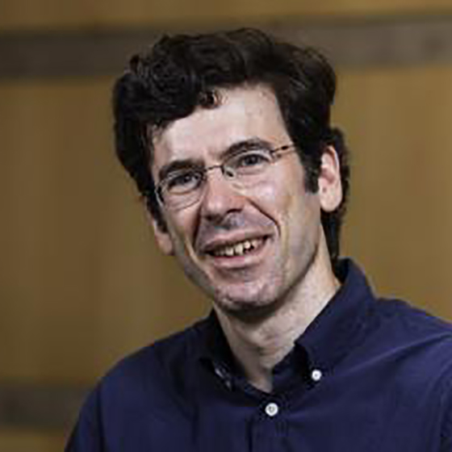

Jon Kleinberg
Tisch University Professor
Department of Computer Science
Department of Information Science
Cornell University
Ithaca, NY 14853
I am a professor at Cornell University. My research focuses on algorithms and networks, the roles they play in large-scale social and information systems, and their broader societal implications. My work has been supported by an NSF Career Award, an ONR Young Investigator Award, a MacArthur Foundation Fellowship, a Packard Foundation Fellowship, a Simons Investigator Award, a Sloan Foundation Fellowship, a Vannevar Bush Faculty Fellowship, and grants from Facebook, Google, Yahoo, the MacArthur Foundation, the ARO, and the NSF. I am a member of the National Academy of Sciences, the National Academy of Engineering, and the American Academy of Arts and Sciences.
Link to: Contact information.
Books and Teaching
- In Spring 2022, Karen Levy and I are teaching Choices and Consequences in Computing (INFO 1260 / CS 1340). The course is designed at an introductory level with no formal prerequisites, and covers a range of ethical, societal, and policy implications of computing and information.
- D. Easley, J. Kleinberg. Networks, Crowds, and Markets: Reasoning About a Highly Connected World. Cambridge University Press, 2010.
Advising
- Current and former Ph.D. students: Anna Evtushenko, Katherine Van Koevering, Kate Donahue, Katy Blumer, Michela Meister, Kiran Tomlinson, Cazamere Comrie, Marios Papachristou, Yanbang Wang, Manish Raghavan (MIT), Maithra Raghu (Google), Rediet Abebe (Berkeley; Harvard Society of Fellows), Rahmtin Rotabi (Google), Isabel Kloumann (Facebook), Johan Ugander (Stanford), Sigal Oren (Ben-Gurion Univ), Daniel Romero (U. Michigan), Lars Backstrom (Facebook), Alex Slivkins (Microsoft Research), Mark Sandler (Google), Elliot Anshelevich (RPI), David Kempe (USC), Amit Kumar (IIT Dehli), Debra Goldberg (CU Boulder).
- Current and former postdocs: Jonas Juul, Nate Veldt (TAMU), Hoda Heidari (CMU), Austin Benson (Cornell), Flavio Chierichetti (Sapienza University of Rome), Jure Leskovec (Stanford), Sid Suri (Microsoft Research), Gregory Kossinets. (Google), Mohammad Mahdian (Google), Frank McSherry (Microsoft Research) Anupam Gupta (CMU).